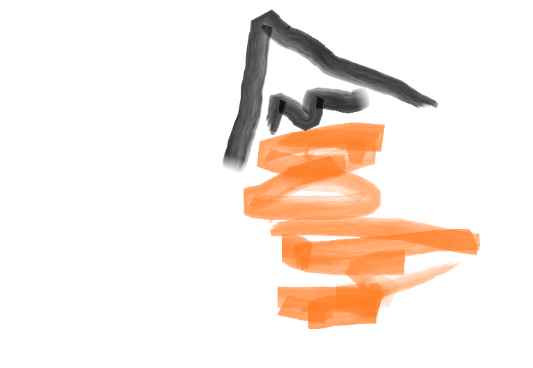

Blog!
This is the start of a blog!
It's a collection of ramblings about software and other interests. It mainly serves as a space for me to hash out thoughts in more depth than on IRC.
The content will be very disorganized; the difficulty of organizing things nicely in raw html is the whole reason blog frameworks exist. But! This may well be offset by the fact that I'll probably never post anything.
I'll put things in reverse-chronological order. If this balloons in size, or distinct themes emerge, I'll spread the content across several pages, so it's easier to navigate.
I have an advanced, bespoke tagging system. It's called `ctrl+f`.
Post The First (Sticky)
26.09.16
I've started blogs in the past. What tends to happen is that I make, say, an art blog, post a few things, and then go on a music kick for ages. By the time I get back to art, the blog is ancient
So, this website is my attempt to avoid that sad fate, by having sections for multiple interests. There might be times when I only update the music section, or the games section, and so-on.
At some point I'll revamp this so that it contains proper tags and soforth... But I won't stress over it until I have some actual content.

The Violin
21.07.17
This was originally titled 'learning the violin', but I think that's too generous.
We have a violin lying around in our house. It looks like this:
It's my partner's; it's purple and glittery because that fit best with his ambition to play a violin on a windswept moor in the moonlight. He took lessons for about 6 months before abandoning that ambition in favour of a Steam sale, and I'd never played it myself. It was only a couple of weeks ago, three years later, that I remembered the violin existed.
I picked it up and had a play around; I was curious and the unique awfulness of a violin appealed to my little troll heart. Plus I feel like if you have fancy things, you should use them or give them away, and since it wasn't mine to give away but it was sitting there, that meant I had to use it (okay, it's a cheap violin, but if a *violin* isn't the definition of a 'fancy thing', I don't know what is).
I started out thinking it'd just be funny to get a recording of me failing to play it to show my friends. Here's me the first day I picked it up, after about half an hour or so:
When I started, I was... scared of it. It was very loud and very unpleasant, so I would play a note, get frightened by the sound I'd made, faint, and wake an hour later in a cold sweat. I couldn't bear to practice bowing for more than 10 minutes at a time the first couple of days, because the sound was so upsetting.
BUT. It sounded SO bad that it felt like the violin was mocking me; every sharp note was the instrument cackling, 'Hahaha, you can't play me!'. And then it became A CHALLENGE and I had to DEFEAT THE VIOLIN, my FOE. I was not going to let some purple sparkly violin be the King of *this* Iron Fist Tournament.
So I kept coming back to it, because there had to be SOME WAY to get it to sound good, and I just had to figure out THE SECRET. And maybe this time I'd suddenly be able to play it, or maybe now, or maybe *now*, or...
... Well, that hasn't happened yet, but it is weirdly addictive. Here's a clip from a week later (probably about 2 hours' total practice time between the first one and this one, though some of that was spent holding it like a guitar and playing 'Seven Nation Army' on it pizzicato...^^'; I played it for maybe 10-30 minutes a day across a few days, and spent the rest of the time googling 'how long does it take to learn to play the violin' in the hopes that it would magically make me better):
Violin after a couple of hours
Then I didn't touch it for a week, because I felt guilty about playing it at all. The main reason I play instruments is to make it easier to compose*, so it's a bit of a chore anyway, and I generally hate playing instruments if I think other people have to hear. I especially hate playing instruments if I know I'm making a horrible sound. So violin-in-a-flat is not in my comfort zone. But! I wanted to DEFEAT THE VIOLIN, and that would require me to actually practice on it...
So I ordered a practice mute online (if curious, it was this one ). It made the violin sound 'wrong'**, but it was much easier to practice without fear of it making such a loud harsh sound. I could focus on bowing and intonation without wanting to rush through pieces just to end the torture, and do more 'technical' practice without worrying that I'd get an eviction notice. Though given the following exchange with my partner, I might still get kicked out:
Me: Hey am I getting better am I am I?
Him: Well... er... I would definitely say you're getting more, erm, *confident* with it...
Thus I have my critics-- but I think the mute made a massive difference; this was after 30 minutes' practice with the mute (though I took it off for the recording):
It's still unpleasant, but better than it was, I guess.
Other things that changed between the first and last violin clip:
* I learned how to hold the bow more conventionally and less like a saw
* I tightened the bow
* I rosined the bow
And I also somehow broke the chin rest with my face.
* Here's my first violin composition:
An automated playthrough of the midi via musescore
** I later tried recording a piece with and without the mute, so it was possible to hear the difference. Here it is.
I've also found that even though I don't play that much (max 1hr a day), try to play quietly, and generally use the mute, my left ear always feels like it's full of cotton wool after practicing. I really wasn't expecting that, though I can't handle loud volumes in general (I sometimes prefer using bad headphones because my mp3 player can't go quiet enough for me with the better ones), so maybe it's not surprising. I've started wearing an earplug in that ear while playing; I didn't want to block out too much noise, and so have finally found a use for the freebie earplugs I get on long haul flights.
It's now a little under a month since I first picked up the violin; here's where I'm at:
I am likely to stay on that kind of piece for a while.
In an attempt to convince myself I do sometimes make progress, I also recorded some guitar practice, so here it is for contrast (it's much quieter):
(Carulli op 114 n3, though judging from other online videos, I've either misread the sheet music, or I have an arranged version)
The First OpenStack PTG
08.04.17
I was tidying up some folders earlier today and came across this half-finished blogpost, written just after I got back from the OpenStack PTG in Atlanta, that apparently I never got round to actually posting. So... better late than never, I guess? Here it is.
Last week, I attended the first OpenStack PTG (project teams gathering)! It was great!
Previously, we had one event every 6 months: the OpenStack Summit. This was a big gathering, and it could take a day or two just to make a personal schedule of sessions you wanted to attend. The attendees were a mix of developers, managers, marketing and sales staff, recruiters, people-new-to-OpenStack-who-were-curious-about-it, press, live bands, ice-cream trucks, etc
This meant things were *busy*. It was pretty common to run around all over the venue trying to catch different sessions, struggling to find people you wanted to talk to, or starting a conversation only for it to be interrupted after 10 seconds by someone else or a busy timetable.
Along with the summit, there were also quieter, 'midcycle' events, organised by each project team. These were designed to make progress on specific work items that required people on a project to be in the same room. We did some of these for StoryBoard, and they were pretty successful; we planned out a lot of development, sent a lot of patches, and most importantly, ate a lot of cake and gummy sweets.
However, since these midcycle events were organised per-team, there were many different midcycles in different countries, all with schedules that could conflict with each other or with other unrelated events. Therefore, it was difficult to attend multiple midcycle events, and thus cross-project work suffered.
Enter the PTG. This is a developer-oriented, cross-project event, aimed at bringing all OpenStack developers into the same venue for a week to focus on the technical issues. While non-developers can attend, in general they will only get value from it if they have enough context to know why they specifically should be there. In general, if you are not a developer, and you don't know if you should be there, you probably shouldn't (because you'll be bored with nothing to do!). There is still the OpenStack Summit every six months-- an event geared toward cross-project communication, new-contributor onboarding, presenting new features, business discussions, etc.
I felt I had much more productive conversations at the PTG than I had at previous summits, as people could focus better, and were more relaxed. OpenStack is always theatrical, but a focused audience meant that participants were less worried about presenting material to satisfy multiple audiences, and could just get on with work.
There wasn't a global schedule of sessions; project teams just each took a room, and organised agenda items in a way that made the most sense to them. In the infra room, for example, fungi read out the items on the agenda at the start of the first day, and then we split off into groups to discuss the things relevant to us and work on them. Most of the room huddled round to talk about zuulv3 and work on specific things that jeblair had listed. People came up to me to ask me about StoryBoard things, and in the gaps I sat near the Zuul team, since I'm interested in the project, even if I'm not directly involved at the moment. Sadly, I didn't succeed in learning the codebase through osmosis, but it was nice seeing people looking happy when it got just that little bit closer to ready. :)
The thing I enjoyed most, though, was being able to catch up with people and have long, uninterrupted conversations. It was great to actually get to know people instead of having a 30 second 'hey, how are you?' 'I'm good, how are you?' 'fine, gotta go' in a hallway. The hours were much the same (roughly 9am-1am for me), but the quality of interactions was much higher, and it was possible to discuss technical details at length in a relaxed environment. We spent the time between 6pm and 1am quiet restuarants and bars with small groups of people, instead of at big vendor-sponsored parties where it was too loud to talk. At these sorts of events, hundreds of introverts pretend to be extroverts for a week, then spend a few more weeks alone at home recovering from the amount of social interaction. :) So, if an event makes it easy for attendees to branch off into small groups when they start feeling tired, those attendees are less likely to get burned out before the end of the week, and actually end up participating *more* overall.
This atmosphere was fantastic when meeting new people and discussing collaborating on projects. When I'm choosing projects to use, a tool is more appealing when multiple parties are interested in developing it, and, in my experience, fledgling projects tend not to attract contributors based on technology, but based on the people involved. In other words, software is a collaborative endeavour, and many people pick projects (and companies!) based on whom they like working with (especially as a project in its early stages may require contributions in its participants' free time; if you're going to give up your evening, you want to have fun doing it).
The post draft ends here. I guess I got distracted.
Some Differences between Python and Perl
26.02.17
Recently, I was tasked with sketching out the groundwork for translating a Perl library to a Python library in a week. I didn't know any Perl when I started, but I'm more used to 'translate this codebase from language A to language B' where I'm new to language A and language B, so it was almost relaxing. :) At least this time I had some Python!
Needless to say, I didn't get very far with it, but I learned a lot, so this is a short post on some differences I've found betweeen Python and Perl. I figured it might be useful to note these things somewhere I can find them again. They are in no particular order.
I am (obviously!) not an expert. Take this post with a grain of salt.
1. Typing
My notes here are not in-depth. Python and perl handle types a bit differently. When asked to operate on two variables with different types, Perl automatically converts one of them to match the other, performs the operation, and then changes the variable back to its original type. So if you add an int to a string, eg:
"123"+1
Perl will convert "123" to 123, do 123 + 1 to get 124, and then convert that back, for a result of "124".
In Python, if you do "123" + 1, you will get a TypeError
, as the types don't match. You could either do
"123" + "1" for string concatenation ("1231")
or 123+1 for
addition (124).
2. Variable Names
You've probably seen this around: Perl likes special characters.
Variables in Perl are prefixed by special characters denoting
their types; @ connotes an array, $
connotes a scalar (single value- could be a number, could be a string),
etc. So:
@dogs
would be something like:
dogs = []
in Python,
and
$foo = 'foo'
might be
foo = 'foo'
And so on. In Perl,& in front of the variable name can be
used as
the syntax for calling a function, though there are multiple
ways to do this. There is one way to call a function in Python:
use brackets after the name of the function.
3. Function Declaration
Well, in Perl they're known as subroutines, not functions. So that's handy to know when searching the internet. You define them like:
sub foo {
foobarbaz
}
Any parameters passed to the subroutine exist within it in a list
denoted with the @_ 'array variable'. You can also see
individual values from that array with the 'indexed scalars', eg:
$_[0] and $_[1],
which mean 'get first thing from list of
parameters' and 'get second thing from list of parameters'
respectively. Also, the list of parameters becomes an array
once referred to with @ (we'll come back to the difference
between lists and arrays in Perl in a bit).
Perl also has a plain old $_,
which is a default variable used by many things.
There is also $1, which can be used to get the
first thing matched in the most recently run regexp.
Anyway.
You could call a subroutine like:
&makesounds('quack', 'moo');
and that subroutine might be defined like:
sub makesounds {
local(@listofsounds)
@listofsounds = @_
local($ducksound)
$ducksound = $_[0]
}
In python, the equivalent call would be:
make_sounds('quack', 'moo')
and the equivalent definition:
def make_sounds(sound_1, sound_2):
list_of_sounds = [sound_1, sound_2]
duck_sound = sound_1
you could do this in a lot of different ways, but that shows how things are passed. (You wouldn't need the explicit `list_of_sounds` there, for a start) In python, variables are scoped to the function in which they are defined, by default, and it's preferable to call things by name than by position passed.
Python functions always return None, unless they they are explicitly told to return a value. Perl subroutines always return a value, which will be the last thing evaluated in the subroutine.
4. Arrays and Lists
Arrays and lists are not the same thing in Perl, even though these names are used interchangeably for other languages (and are frequently used interchangeably in info about Perl, for some reason). Perl's arrays are like python's lists. Perl's lists are more like python's tuples (eg: lists are immutable). There are some differences, but that's my mental model of them at the moment. Square brackets denote arrays; curved brackets denote lists. There are better guides to these elsewhere on the internet. The guide I visited the most was: this one
5. Perl has a library called Mouse that has nothing to do with the mouse
This library extends perl's object-oriented programming (OOP) support to make it easier to assign attributes to classes and things. Many features covered by Mouse are builtin in Python. As you can see, I'm still sketchy on the details.
Classes themselves are Perl packages; they list methods (subroutines), including an object constructor method, to make an instance of the class. The constructor can have any name you want. If you name the constructor method 'new', then to create an instance of the class, you could do:
$new_class_instance = ClassName -> new();
The class(/package) name is passed as the first argument to any methods in the class.
In Python, a class is just a class, and the constructor is always
the
__init__ method; to create an instance of the class, you do:
new_class_instance = ClassName()
In Python, the class will be passed to any of the class's methods that take 'self' as a parameter. This must be explicit in the definition of the method, but does not need to be listed when the method is called. So this:
class Foo:
def __init__(self, param):
self.name = param
def test(self):
print self.name
Foo('foo').test()
will happily print 'foo', as it creates an instance of the Foo class
and then runs that instance's 'test' method. You don't need to
explicitly pass it 'self' in the call, or call __init__() by name.
A misc note that doesn't fit in anywhere else nicely: in Python, you can have an array of arrays. In Perl, arrays are always 1D; you would not have an array of arrays, but instead an array of references [to arrays].
6. Asserts
Perl doesn't have asserts built in. Instead, it uses the TestMore
library, specifically the function ok(). Sometimes is() is used
instead, which is synonymous. So this also shouldn't be confused
with the python is, which is roughly a test for equality
(to be precise, is in python checks that two variables point to
the same object; == checks that both variables pointed to are
equal. These are referred to as 'reference equality' and 'value
equality' respectively, and catch me out about once a week.).
Misc note #2:
for Perl code, the Carp library is used for various
exception-handling things;
croak, confess and cluck
are all part of this library,
so that's what's going on if you see those in some code.
Python code tends to include `try... except` blocks for this sort of thing.
7. String concatenation
Perl uses the dot operator, eg:
'foo' . 'bar'
would be 'foobar'
python uses the +:
'foo' + 'bar'
8. Ranges
In Python, a range is indicated with the range function, which starts at the first argument and counts up to (but not including) the second (with a third argument as an optional 'step'). To get the numbers 1 to 5, you would do:
range(1, 6)
range(1, 11, 2)
(ie: that starts at 1, stops before it reaches 11, and goes up in steps of 2)
in Perl, the two dot operator is used. It is inclusive; to print out numbers 1 to 5, you would do:
my @numbers = (1 .. 5);
there is no 'step' option. You would have to combine the two dot operator with other things.
9. Do Nothing
In Python, to indicate unimplemented code that should be skipped over, you use the pass keyword:
def foo():
pass
in Perl, you would use a triple dot:
sub foo {
...
}
Both the two dot and triple dot operators have a couple of other uses; see perlhacks for more (and for more details on the ones I've mentioned).
10. There's More Than One Way To Do Things
If you call a method from a class in Python, the order you write things is fixed and you need to include the brackets. In Perl, things are more fluid. For example, something like:
Animals.list_animal() in Python
could become
Animals -> list_animal(); in Perl
BUT
list_animal Animals is an alternative that should work the same way.
This is known as indirect object invocation. It gets interesting when you are calling methods with multiple parameters and soforth.
11. Whitespace
In Python, whitespace is syntactically significant. In Perl, it isn't.
Well, those are the ones I've hit so far that I feel I understand well enough to write about in some capacity. If there are errors, feel free to email me; I'm not an expert and I don't pretend to be! Hopefully this is still useful to someone, even if that someone is just future-me.
We Built a PC!
11.02.17
So, last weekend, I built a PC with my partner. We'd been ordering parts over the last month, and finally it was time! This post is just a collection of thoughts about how it went for us. If you want a 'how to build a PC' post, there are lots of others online, written by people more knowledgeable than I am. (This post isn't even a useful collection of links, since we didn't go to any particular website and just searched things as we went along.)
I've wanted to build my own PC since I was a teenager. I didn't do it in those days because it cost money, I had no internet access, and all my liquid assets were in the form of HMV tokens. Then I moved out and lived at a different address every year for half a decade, and my laptop covered my needs. I game a little, but my games tend to be about twenty years old-- a remnant of only buying preowned games as a kid. So, owning a desktop didn't make much sense.
But! I work in software now. I'm thus picking up dangerous habits, such as making software.
My home laptop is a Lenovo B570e, with an i3 processor, windows 7 Home Premium and 4GB of RAM. I adore it (it's a machine that historically has done what I need it to do and nothing else), but as I started spinning up more virtual machines to try things out, I'd get frustrated by the loading times. As well as virtual machines, there were some tools I was curious about (hi there unreal engine); my laptop would see the minimum requirements for them and laugh. More and more, I wanted to be able to send a quick patch for StoryBoard without waiting 15mins for a VM to wake up. I wanted to play pythonpython in real time...
I decided I needed better hardware.
My partner wanted to play newer games and had also wanted to build a PC for a while, so we agreed to split the cost down the middle and go for it. This was probably stupid because neither of us had built a PC before; I'd used an antistatic mat once at work and we'd made some LEDs light up via an arduino one time. So, hardware experts, right there.
Buuuut we also knew we'd wonder 'what if' if we did a practice build with parts we didn't care about, and probably end up spending more overall, so we decided to just do it.
We used pcpartpicker to pick stuff out, based roughly on my partner's friend's recent build. The most fun part of this was seeing what kind of wacky things were out there. We discovered one vendor had made a computer case shaped like a train, that could move down a little track:

There were also some fantastically garish peripherals:


In true bikeshed fashion, the bit that took the longest to pick was the keyboard. I tried asking an esteemed colleague what he'd gone for, only to discover he'd bought one that retailed for 190 quid. I decided that the keys must be made of gold bullion, he was a bad role model, and I should ignore him.
In the end, the pressure was too much. My partner and I gave up and got some Logitech business keyboard for about a tenner.

This sort of thing.
Once we had all our parts, it was time to build the computer! We didn't know what we were doing, but figured it looked fairly easy. Our past victories included two ikea tables, a chest of drawers and a massive wardrobe, so... exactly the same thing!
Putting the pieces together was straightforward, though I had a heart-stopping moment where I thought I'd destroyed the motherboard by screwing in the cooler too tight, despite trying to be as careful as possible because I was scared I'd overtighten it! Protip: when the cooler manual depicts a screwdriver, you'd better finger-tighten, just as you were doing before you saw the screwdriver in the manual and thought it was important to tighten more than expected, with a screwdriver... (This was a Cooler Master Hyper and a Gigabyte z170x Gaming 7, if anyone's curious)
Anyway, I was pretty heartbroken (I'd been so scared of overtightening that I'd only *nudged* the screws with the screwdriver and I have no physical strength *anyway*,; it was so unfair!). I feared that if we kept going and it *was* damaged, we'd short everything and lose all our material wealth. On the other hand, the motherboard wasn't cheap enough to just toss away, and we'd *finally* got all the parts, plus it was a Saturday night so there was no chance of getting next-day delivery for a replacement, so it'd be another week before we'd have time to try again. Such a dilemma...
We stopped, took the cooler off, and took a look at the damage. It turned out to be far less than it seemed; I'd pulled up some of the transparent motherboard coating, but the traces seemed to be intact and things were only cosmetically scuffed. So we carried on, and I was relieved to have not burned around 150 pounds. (Though only time will tell for sure...:( )
Based on general trends we noticed in guides around the internet, we did things in the order: cpu-motherboard, cooler-motherboard, ram-motherboard, motherboard-case, PSU-case, cables, wifi card, video card . This worked. My partner's friend was impressed when we mentioned we'd assembled things with the case standing up, but that's a lot easier when there are two of you-- though building it standing did mean we nearly knocked it off the table a few times, so that was scary.
The cooler was by far the trickiest bit to assemble and attach. It took us a while to notice that the instructions for multiple different types of boards were all lumped together on the page, and that not all the parts were relevant to us, as they supplied parts for lots of different boards so you could just use the ones that matched yours.
Also, at first we didn't realise the cooler screws could be repositioned to fit our board (I spent an embarrassingly long time going 'if only these screws could go into the middle of this space, then they'd fit' before I realised that they *could* go into the middle if I moved them the correct way. This was a cooler master hyper with a gigabyte z170x gaming 7, for reference, in case it would be useful to anyone to end up here through a search... There is a picture in the manual for this, but we missed it, and the manual also contains a picture of a screwdriver, so.).
Most of the rest was just 'plug thing A into slot B', where the components only fit in the place they were meant to live. An encouraging thing I've picked up from work is that, when people say 'this is nice hardware', half the time they just mean 'it has labels and I am able to tell what things are' (I think this is often true of programming languages, for that matter).
Both our case (corsair 450D; we didn't get the train) and components were well-labelled, and on the whole the cable labels matched up with the motherboard labels, so that made life easier. I think one of the cable labels said 'sw' where the motherboard expected 'ps', for 'power switch', or something like that, but the manuals made it possible to work out what was going on. It also took me a little while to work out that there were two rows for pins on the front panel bit of the motherboard, and the cover for them used one side to indicate things on the top row and the other side for things on the bottom row; at first I was confused the sides of the cover were different. I don't know how to express this any more clearly without pointing, and I'm too lazy to take pictures, sorry. Also I didn't know what it was called at the time and just looked at the manual now to discover it's referred to as the 'front panel', which makes sense since those connections are for things on the front panel of the case...
Once we had most components hooked up (though not the graphics card, just in case my motherboard damage was worse than we thought and it fried things), we tried plugging in the monitor and seeing if it could boot to bios. It was the moment of truth...
It booted!
Things seemed sensible. Well, the BIOS were ridiculous in that they had *bevelled edges* and a *cursor* with a *gradient* (I'm used to a more 70s look), but everything worked. The RAM reported was the amount we thought we'd put in. The temperature seemed comfortable. The processor's specs matched those on the box. We were kinda amazed that there was an LED in the case that showed numbers (apparently they're error codes...) and a backlit power symbol. We were living in the future.
After we'd had enough time to bask in our newfound status as People Who Could Build A Computer And Were Basically Like The Smartest People Ever And Did You See That It Turned On And Everything, we turned the computer off, and added the graphics card. We had to move the wifi card since we'd put that in the middle for some reason (maybe, just maybe not the smartest people ever?), and there wasn't room, but it was pretty quick to fix.
After that, we installed the various drives. Working out how to take off the cover for the optical drive was time-consuming, probably because by this point it was about midnight and I had been ready to fall asleep when we started at 7pm. We eventually realised we needed to reach into the drive from within the case and push some tabs in to free it, so it was simple enough, just took a while to look in the right place.
It also took us a while to locate the SSD bay (I'm still not convinced it didn't spontaneously appear on the back of the case when we needed it).
Once we'd attached all our drives, and the remaining cables (the sata cables were fiddly), we tidied things up and checked it still worked. The computer booted again! And now, the graphics card glowed, too! Which was good because there was a dragon on it, and it's really important for you to have a tiny glowing LED dragon. It actually makes the computer run faster, because the computer doesn't want to look weak in front of the dragon. There are journals about it.*
After we'd put the case sides back on, we noticed the back fan wasn't working. My partner wanted to fix it right then, but it was 1am and I overruled him with 'you are tired and you will end up knocking the computer off the table; we do this tomorow'. So we stopped for the evening.
The next day, we showed OUR GLORIOUS NEW COMPUTER to his friend who was visiting. We turned it on, and at first there was no display, which filled us with dread. We eventually realised we'd actually received two VGA cables with our PSU, one of which had more pins to connect than the other (we thought they were both the same so didn't question having a spare port on the graphics card to plug something in, assuming that was for a different make of cable. Told you we were experts). So, if you get an EVGA fully modular power supply, be aware that the VGA cables might be different to each other.
We swapped out the VGA-PSU cable and tried again (funnn, since it plugged into the PSU at the bottom at the back of the case); this time we got a picture. Finally, we fulfiled my partner's dream of sorting out the back fan, and THE DEVICE WAS COMPLETE.
Later that day I installed the first OS, but I'll save that for a separate post, because this one's far too long already.
So! Building a computer is really fun, and straightforward! If you have no idea what you're doing, you can learn just before you do stuff and you'll be okay! It's easier than many things! Check the manuals sometimes! There's a lot of light puzzle solving! People will say it takes 2 hours; those people have probably done some of it before or spent more time reading up on the details first! It probably took us about 6 hours, working slowly and carefully and going back and checking things a lot, including reattaching the cooler! Be careful with that cooler! It's yet another thing that's easier than developing in angularjs!
I love being in a position where I have the freedom to do this sort of thing, and I'm also glad to live with someone who likes to do things like build a computer with me. There was a pretty even balance of 'you're doing it wrong; it should be like this' from both of us, so we were both pleased about that, and he was kind about the potential motherboard disaster. (In terms of relationship-building, 'building a computer' maybe doesn't rank as highly as 'going to dinner with another couple to remind you of all the reasons why your partner is so much better', but you get a computer out of it, which beats an awkward evening.)
So, that's that! You should probably do it more sensibly than we did it, but building a PC is definitely worth it if you want something with good hardware; you probably don't save that much money (because you end up spending more getting better parts than you really need, and every time you try to look into finding a cheaper part, you instead end up upgrading to one that costs twice as much as your old choice...), but you get better value for money. You learn a lot, and it makes you feel less afraid to replace components in the future for fear of breaking everything, as you put them in there in the first place. And, most importantly, you get to say that you built your own PC!
Just one of the incredible mice we saw on Amazon. I do own a rhinestone-studded mouse shaped like a mouse (the ears are the buttons), and I'm sure after this goes up I will regret publically admitting to that. There may be a picture at some point. (It's one of my favourite possessions really)
We actually did end up buying this one because it was too ridiculous not to get. It looks like a transformer... Why does it look like a transformer...? Anyway, we've since discovered that the LEDs don't turn off unless the computer is turned off at the back, and there's no way to change them from the 'slowly change colours' setting. It's a weird thing to have in your house, but I regret nothing.
I considered linking my colleague's keyboard here, but I thought that might only encourage him. Here's one we saw instead which might act as an antidote for wanting to buy a keyboard.

It was less extreme version of the damage seen in this post. So much sympathy. :(
* They're not peer-reviewed.
How I'm sort of, but not quite, able to imagine visual things
28.01.16
Yesterday I was chatting about maths things, and mentioned offhand that people who are better at geometery than I am tend to also outrank me at picturing objects in their minds. My mathsy colleague (hi, SotK!) talked about being able to picture things like a little house that he could rotate, zoom in on, stand next to, walk around; he could add some trees and a pond to the back garden.
My responses were mainly incredulity and allcaps 'BUT HOW DO YOU KNOW WHAT IS IN VIEW AND WHAT IS OUT OF VIEW', even though I've met plenty of other people who can do this. It always makes me feel like I'm one of the last survivors of a different species, away from which these people have evolved. So here is a very long post on my experience; writing it out helps me think more clearly about it, and I figure it should be public since I love coming across other people's and seeing how radically different they are. If you're not interested in a long essay on what it's like to be a Zara, this is not the place for you (but why are you on my blog? It is a really boring blog! You will be so much happier elsewhere! Be free, be free!)
So. I am awful at visualising things, to the point where I'm not sure if I can at all. If someone says 'imagine an ice cream cone', I am aware of a wavy-edged white thing of a certain size, that I know is Mr. Whippy shaped (instead of, say, round) but couldn't actually draw if prompted because I don't know what its precise shape is (well, that's not quite true. I could draw it but I'd be working out its shape based on what I already had on the page). I picture its colours, and I picture a crisscross raised (I feel it) texture that I know is on the cone, but don't actually 'see' on the cone (again, if I tried to draw it, I wouldn't know where exactly it was). If I try to picture it on the cone, I get a completely different angle, and the edges are a mystery. I get a lot of background sound; I hear someone biting it and can imagine the movements of little crumbs falling off, from another perspective entirely. I know the ice cream is on top of the cone but I can't picture the place the ice cream and cone intersect; when I try, I picture a flash of an empty ice cream cone instead, from a different angle, and I'm not sure what that looks like really (I get a circle with spokes, but I don't think I'm imagining it consistently from one perspective all the way round, so it's more a collection of partial circles with spokes, as that's what I 'know' it looks like).
So yeah, my impressions of all the 'components' of the ice cream are from different perspectives and distances, in different positions, and very very vague anyway. The best way I can describe it is when you are shown a flash of video for a fraction of a second and then try to recall it, and there's just a distorted, vague after-image. Though it's possible other people's experience of *that* phenomenom differs from mine, so that might not be helpful at all. And also it's after-images of multiple videos, shifting and dissolving into each other and never being clear to begin with. They're being drawn in invisible ink, so the only bit I'm aware of is the motion of drawing; it can feel like there is an image going on *somewhere*, but I can't see it. And it's more like an after-image of experience than an after-image of video since other senses are squooshed in there. I get a bunch of disparate, weak data, some realistic, some cartoonish, including a summery light quality and a sense of the 'icecreamness' of the icecream, some wave sounds, some kids yelling, vague sea smell, vague ice cream smell, vague ice cream cone smell, feel of ice cream cone in hand, a wasp's sound and movement, impressions of all sorts of other things related to ice creams, etc...
I *can* picture colours, and their distribution, and (probably the same thing? ) light quality. I can picture textures, sort of (I think I'm getting a mix of colours, sensation to the touch and how light hits a thing). I have a sense of where things are in 3d space; if I close my eyes, there's a left, a right, an up, a down, and things can be nearer or further from me. I just can't picture the things themselves. I can only picture very basic shapes 'as' movements; if I think of a vase, I actually think of a single point moving in the way it would move were I to draw the side of a vase, and I 'feel' it in my hand. I could tell you what the vase was made of and picture its texture, just not its shape (at least, not all at once). In that vein, I can tell if a line is wavy or straight, but not precisely where it ends and begins (at the same time, anyway), and it's more like I 'know' it's wavy and can trace over the waves than that I 'see' the waves. I 'feel' volumes; I don't see them.
Visualising other senses is fine. I can imagine sounds easily, along with textures, smells and (more weakly) tastes. I think I do a lot of it without noticing when I imagine visual things. When I imagine something, my body simulates its response; when I picture a smell, I feel it in my nose, which scrunches if it's a bad smell, and taste it in my mouth (if it's a bad smell my throat might close and my stomach might tense up). Similarly, if I picture a sound moving around behind my head, I feel it move (though I actually seem to track it with my eyes and cheeks/jaw, and when I asked my partner, he found he also used his eyes. Weird.).
When you look at objects in real life, you move your eyes a lot without noticing, to perceive the whole object; in general only a tiny fraction is in focus at any moment. (eg: read a sentence, feel your eyes move; try to work out how many words you actually *see* at a time. I get about three letters in focus and a blur of everything else in my field of vision, then quickly move my eyes to see more, normally without noticing). I feel like my mental images are kind of like that, only I can't move from one image to the next to construct a bigger shape, because the blurred background gets replaced with nothingness, and there's no way to focus in on nothing. My colleague and I joked that I'm missing a module and need to install some graphics capabilities in my brain; maybe my head's overzealous about back-face culling. I do see things in dreams, that look like real things, so that might suggest it's not a storage problem, but a problem with recall. (And yes, this whole post is just description and vague speculation; I'm too lazy to do any real philosophy on it right now, so best not reading it as such.)
So, when I try to picture something visual, it's like my eyes try to find it, but can't tell where to focus, and each time they *change* focus, I lose the whole picture and get a different one. So I can picture a single point, and I can picture it moving from one place to another, but I can't picture the line between the starting point and the ending point, as I lose the starting point when I change focus. My partner says he doesn't move his eyes or focus with his eyes at all when picturing visual things; 'they come from the back of my mind on a screen'. BUT WHERE IS THAT.
We also discovered that I find it easier to imagine things if my eyes are open; then I can picture a basic line or shape extending off something in my field of vision, or resting on top of something else, etc. My partner finds it easier to imagine things with his eyes closed, as it feels like a totally different process to seeing things with his eyes. I quizzed him a bit on what happens with basic shapes, and we had this exchange:
Me: I can picture the number '3', but it's more like I picture a point of light tracing out the shape of the 3, that leaves a brief afterimage, and I feel it in my hand
Him: I think mine is showing off now because I'm picturing a 3D '3' rotating
WHAT. HOW. YOUR BRAIN CAN'T JUST *DO* THAT. THAT'S SOME X-FILES NONSENSE.
So yeah, I'm not sure I can picture any still shape. I think I can only picture movements, colours and proportions. I can also picture light; I sometimes give myself headaches by picturing bright light, and feel the muscles around my eyes tense (once you've remembered you can do it it's really hard not to do it...). Well, not sure if I see it or just simulate my response to it, but it feels the same...
My partner can't picture smells at all. I think that's pretty common, but seems strange to me since smells seem so much simpler than pictures. It feels like there's less data to get confused by, with smells.
I've seen several blogposts on 'aphantasia': a lack of inner visual imagery-- but that doesn't quite fit for me. It's more like I have a texturing, positioning and animation studio, and someone just left out the drawing bit. Given a bunch of components, I can arrange them in space, colour them in and move them around-- I just can't make or see the components themselves. It makes no sense but that's what my brain does, and it's possible that 'location in space' or 'movement' is not visual data to me but more simulated physical movement. But I don't see what else light and colour could be, so I figure I've got some visual imagination going on. I also wonder whether it correlates with eye-quality at all; I'm so shortsighted that things start to blur 5in from my face.
I always thought it'd be cool to be able to visualise objects, since then drawing from imagination would be like drawing from observation, and I could create fantasy worlds. But maybe my brain does other cool stuff to compensate, that I can't identify because I'm the one experiencing it. A lot of people seem to find it harder to make up melodies than I do; I could just tell myself my box swapped a beetle for a Beatle. (I'm sorry, nobody deserved that...) But yeah, everyone else gets a sci-fi superpower; I want one, too. Please let me know if you notice it.
This whole thing also reminds me of being a kid and trying to run fast with my head rather than my legs. I'd try to speed up by tensing my body up. I don't think I realised I could move my legs 'without thinking about them' instead until I was in my mid-teens. It felt like the roadrunner animation! So maybe I'm capable of picturing objects, and I've just spent my whole life doing it wrong. That'd be pretty funny.
This also means I intend to write some pygame-dev-helpers for displaying the coordinates of objects in space, etc, for poor souls like me, who can only picture a complete object by literally drawing it. I'm considering basing something on badpaint for it. Need to give it some thought, and find out what exists already. I just know I'm wasting a lot of time working similar geometry out repeatedly, and hey, my maths teacher always said the best mathematician is a lazy mathematician. :)
 A picture of my mental representation of a house, used to describe to my colleague. It has a tudor arch and is redbrick, but don't ask me what those look like.
Rocksmith
24.12.16
I planned to do a bunch of stuff this holiday. I was going to pick up where I left off on Advent of Code (day 10, I think) and save Xmas from the malevolvent Easter Bunny. I was going to send some patches to StoryBoard. I was going to get the Arduino out of the drawer and make it do something festive. I was going to write some games, get more familiar with Krita, learn some C++, finally move on from plate 29 in 'Drawing the Head and Hands', rewrite the novel, make progress with the keyboard and the classical guitar, decorate, maybe finish some embroidery...
Then I bought Rocksmith.
And that's the story of how I forsook my former life for the electric guitar.
For the uninitiated: it's like guitar hero, but you use an actual guitar. People asked me some questions about whether it was good for learning the guitar, so I thought I'd summarize my experience here.
First, some context, since this kind of thing will totally depend on your prior experience.
On the gaming side, I love rhythm games and played dancing stage and guitar hero to death. (A longer list is more like: Dancing Stage, Parappa the Rapper, Dance: UK, Stepmania, Amplitude, Guitar Hero, Rock Band, Patapon, Audiosurf, Vib Ribbon, Space Channel 5... rhythm games are probably my fave genre, so I've played a lot of obscure ones over the years.) That side of things is very familiar to me, and I'm good at them through repetition if nothing else.
On the 'actually playing a guitar' side, I've been learning the guitar for a couple of years. I have two. My first is a classical, the Valencia 3100A. This was about 60GBP off Amazon; that is an AWFUL way to buy guitars and you should never do it, but I was lucky and mine sounds nice. Although it might even be a fake (online pictures of the 'same' guitar look different to mine)...
My second is an electric Epiphone G400 Pro that I bought for my birthday after a year, once I was sure I wouldn't just drop the hobby; at that point I thought I could spend more and get something that'd age well. ALSO, IT'S SHINY.
Before starting, I was able to read music, and had been learning to play the keyboard for about 6 months. I can't play any other instruments. My brain seems to lean heavily toward music, but I have no awareness of my own body and it takes me forever to learn movements. So it takes me a decade or two to learn a bar, and my playing is often indistinguishable from someone repeatedly dropping the instrument on the floor.
I'm probably best classed somewhere from 'experienced beginner' to 'early intermediate'. I've been learning the two styles of guitar at the same time; 'pop' guitar via the Justin Guitar series, and 'classical' guitar mainly via this book. For a year I learned both styles on the same guitar. (It's an interesting experience; it feels a lot like playing two different instruments that happen to be shaped the same way, and the notes and chords 'feel' different.) A classical guitar has a much wider neck and more spaced out frets, so my flimsy justification for buying the shiny electric was that I'd be able to do things like power chords without crying, along with things I couldn't do on a classical, such as sustains and string bending...
What actually happened is that I much preferred the harp-like sound of the classical and just ended up playing on that most of the time. When I did play the electric, the metal strings sounded 'wrong', and I'd get frustrated at my relative lack of dexterity with the pick. So I'd switch to using my fingers, and wouldn't learn much specific to the electric.
Enter Rocksmith!
I think the biggest benefit of this game is that it takes you out of your comfort zone. I quickly found it didn't register things very well if I used my fingers, so I had no choice but to switch to the pick. I discovered that, judging from how far my picking hand was from the right string, my picking hand thought the right string was in a different room. Well, pride destroyed, but I can see (and hear) the accuracy improving from day to day. You could argue that if I'm not going to pick, I don't need to learn it, but I'd like to have the option of playing fast things on the electric if I want to, and I prefer the tone anyway (fingers sound a bit muddy when strumming).
In a similar vein, it makes you play music/styles that you otherwise wouldn't play. There's very little on the tracklist I've even listened to before, let alone wanted to play. That could be frustrating if you wanted the game to teach you specific songs (though there is (pricey) DLC), but I was more interested in building technical ability and getting more familiar with my electric so I could go off and learn whatever I wanted. So, along the way, I'm learning techniques that I wouldn't otherwise look at (for any length of time, anyway), and I think that makes my playing more rounded. At the moment I'm just powering through songs to scrape enough points to unlock things, so I'm not really trying to learn any songs, but I'm still finding I'm memorizing things and can play a bunch of new riffs from memory. And hey, I've found some new bands to listen to.
Another nice part is that the game rewards you for hitting streaks of notes, but you get extra points for using the relevant techniques. So this is a pretty effective way for practicing stuff like palm-muting and slides, without penalizing you if you get the right notes and just miss the technique. There are also some great minigames; 'ducks' (hit ducks by fretting the right note) is good for getting comfortable jumping around the whole neck of the guitar; until now I've mainly been playing in first position, so this has been great for things from the 5th fret. A version including note names would be even better for subconscious memorization, but working out the note names at the start and then singing them each time they come up will work in its absence. There's also a zombie shooter in which you have to hit chords as fast as possible, which is pretty good practice.
Even with experience of a billion rhythm games, it takes a while to get the hang of reading the notes on screen; I'm still not totally comfortable with it. The yellow and orange look similar (A and G string respectively), so I get them mixed up sometimes. Similar things happen with the '3' and '5' (for 3rd and 5th fret). It's hard to see the 'shape' of upcoming music, so you might play through something a few times with awkward fingering before realising it's just an arpeggiated D7 or something like that. When I started, I was confused because all the notes seemed to be 'upside down' and I couldn't explain what was 'upside down' about them or why I felt so disoriented by it. It turns out the strings are displayed (by default) as the inverse of tab, so the low E string is at the top. You can fix this and flip them back in Game Settings, and I'm forever indebted to whomever argued for that feature. I can see the argument that some beginners may find it easier, but it will make things more difficult for them later when they want to play tab (and also traditional notation, since higher notes are higher on the stave). (And add my voice to the chorus asking for an option for horizontal scrolling tab.)
A fun side-effect to learning 'pop' guitar for a couple of years first is that I started with chords. So while my picking is clumsy and inaccurate, having done almost no 'lead' practice, I'm pretty comfortable changing between basic chords fast. The game treats chords as more difficult than single notes, so it introduces them after you hit a high enough percentage of single notes in a song. So, because of the order in which I learned things, this is like unlocking 'easy' mode after battling through 'hard' mode, so that's fun (thanks, Justin guitar!)! It was a bit of a relief the first time, since I was starting to wonder whether I'd hallucinated being able to play the guitar a bit...
The 'dynamic difficulty' (game gives you more notes to play when you do stuff right) does mean that you're learning multiple different songs per song, since the best fingering for a note depends on what else you're playing around it, and that changes. It feels better not to build up too much muscle-memory until you're playing the hardest version of a song so you don't learn the wrong thing. So I find I don't worry about using the most efficient fingering until I'm playing the hardest version of a song, because that feels pointless, or even counter-productive. This does mean you can end up playing something differently each time, which won't be the fastest way to progress, and pick up bad habits.
Some people have experienced lag with this game. I haven't. I just have a HDMI cable from an old PS3 into the TV. Maybe there's lag that I just haven't noticed.
The session mode in Rocksmith 2014 is ace for trying things out, learning different scales, and learning how to make music instead of just playing other people's. I like this because most of Rocksmith is very geared toward building muscle-memory and hitting the right things at the right times, whereas this is a lot more focused on *listening*.
On that note, though, there is a pretty fundamental drawback: there is no 'replay' feature you can use to *listen* to yourself after playing a song and hear what you need to improve. The game is a lot more accurate than I expected, but it's no substitute for an ear, so that omission is a shame. I've heard it was left out because players found it demotivating, but I feel that the choice to listen should be left up to the player. Anyway, I have a mic, so I've just been recording on that, and listening when I feel brave.
In general, I think the game is a great tool for increasing dexterity, accuracy, learning some patterns and the basics of various techniques. I think it would be a good resource for learning specific songs, though I haven't done that yet, partly because the tracklist is very geared toward fans of 1990s-2000s indie-grunge-garage, and that's not where I live. I miss the diversity of styles of Guitar Hero (and the diversity of avatars). I love a mix including psychedelic, blues, new wave, glam, hair metal, progressive, and downright weird.
There's some more variety in DLC, but the business model means those tracks are included based on projected sales, so they cater to existing requests rather than introducing people to new things. All in all, I found classic guitar hero a better place for new music suggestions. Which is fine, but also a reason I didn't buy Rocksmith until it was on sale for 60% off. The first game is also a bit weird in that everyone is male, from the tutorial guy to the guitarist in the opening demo to most of the vocalists. Rhythm games have been around a long time; this kind of branding is relatively new to the genre, and, since it coincides with mainstream acceptance of rhythm games as 'real' games (in this country, at least), a bit depressing. But that's a whole other blogpost that I probably don't have the energy to write. Not everyone is male in the intro video of the 2014 one, at least, so I guess someone pointed it out as weird.
Anyway, Rocksmith can help you to hit the right notes, it can help you to hit notes at the right time, and it can help you to hit the right notes at the right time. It probably can't help you go from that to sounding *good*. But it's a start. Plus it's motivated my partner to try learning the guitar again, so maybe I'll get a jam buddy sometime. :)
How We Do UI/UX
12.11.16
This week, David Moreau Simard (irc: dmsimard) was kind enough to praise our work over the last few months on the UI and UX for StoryBoard! Adam Coldrick (irc: SotK) and I* especially enjoy compliments like these, as StoryBoard has been our first foray into frontend development, and we've had to figure out a lot as we've gone along.
The company where we work specialises in systems engineering, so we've been very fortunate to gain experience in web-development via working on OpenStack. We've had the opportunity to learn about the web-development ecosystem from people such as Michael Krotscheck (who has both taught us a lot and developed the bulk of StoryBoard before we were involved with the project), and Beth Elwell (who sends UI patches to StoryBoard as a relaxation method!).
So, anyway, we got a compliment! After I'd finished calling up everyone I knew, and telling them to read irc RIGHT NOW, I started wondering: how do we do stuff? For UI and UX design, can we offer any pointers to teams in the same position we were a year ago?
I'll probably do this as a series of posts, as and when I remember things. So! Here's the first. I think it's the most important thing, and we saved a lot of time by starting to work this way early on.
TIP: Dig to find out the actual problem
There is a fitting Neil Gaiman quote; it's his fourth suggestion over here:
-- Neil Gaiman
So, that's a quote about creative writing-- but we can generalise! When users have an issue, they will suggest specific implementation changes. When that happens, it's good to step back and establish what they're trying to do and why. Identifying the root problem allows you to fix the same issue in all its guises, instead of moving buttons around and back again as you try to satisfy contradictory implementation suggestions. Often, you'll find the best change is nothing like the original suggestion.
You need to be active and engaged during this process; it's obvious when people reply with questions for the sake of it, like this:
User: Argh, the 'create new task' button is on the left; all the other buttons live on the right; it's annoying; can it go on the left, too?
Developer: So, what do you want to do when you click that button?
Well, obviously they want to create a task. Like all development methodologies, don't follow this one dogmatically in cases where it makes no sense. :) Similarly...
User: When I search for a tag, it doesn't show all things matching the tag I specify. It should do.
Developer: Why do you want the software to return all things matching the tag, instead of just some?
That's an extreme example, just to show that you shouldn't ask questions without paying attention, trying to empathise with the user, and attempting to make yourself familiar with the process they want to perform. There *are* related questions that would make sense in that scenario, eg:
Developer: Okay, you want a list of everything that matches that tag. Out of interest, how do you then use that list?
The user will say something unexpected, and this will reveal a *lot* about how you should present the list. For example, the user might want it laid out a certain way so it'll behave nicely when pasted into some other service, in which case it might be better to create an interface for other services (otherwise, the next user will want a different layout, and the next, etc). You might discover that your software can already solve their problem, as it has this interface already, and you need to draw more attention to the interface. Or, the user might plan to do something with the list that your software can't yet do, in which case you have an early heads-up for a bigger feature request.
So, at this point, you note the use-case; if it seems like a good thing to fix, you plan to implement the fix. If not, you raise your reservations with the user; sometimes one of you will change your mind, sometimes not. If you still don't feel convinced, you put it on the backburner, and wait to see if a chorus of other people raise the same issue-- in which case should also discuss the reservations with them, see what they say, and revisit your assumptions as necessary.
You need to be careful with this process. Firstly, if you ask questions just to try to change someone's mind, they will pick up on it and you won't have a productive discussion; you have to go in with an open mind and be humble about your opinions. Secondly, you should respect the user's time; if the discussion takes too long, the user can get frustrated and think 'other software does this like x, so why can't this team just implement it like x?'. But that ignores the original motivation *not* to use that other piece of software-- people wanted a better implementation, not more of the same.
Well, that's that! Hopefully, this will help you feel less overwhelmed when lots of users have different opinions, and you'll be able to discuss and change things more efficiently. Good luck!

StoryBoard!
* I only talk about SotK and myself here, as we work on StoryBoard from within the same context; this shouldn't be read as an implication that we're solely responsible for the UI and UX.
Comprehending Correlation and Causation
01.10.16
This week, I had a traumatic encounter with bad statistics, so I've been thinking a bit about ways in which humans derive conclusions from data. I figured I might as well share it. So! Here are three ways that people perceive the relation between correlation and causation. The first two are likely familiar; the third might not be. I leave it to the reader to decide which way of thinking is the most accurate, which is the most pragmatic, etc:
1) Correlation = Causation
'Wow, that cat is really big! It only eats sharks! It must be really big because it eats sharks!'
I see that a lot.
2) Correlation != Causation
'Wow, that cat is really big! It only eats sharks! I wonder if the cat is big because it eats sharks, or if it eats sharks because it's big enough to fit them in its cat mouth-- or some combination of these factors? We need more evidence to determine the relation!'
I see that a fair bit, generally in response to a a claim that implies 1).
3) Causation = Correlation
'Hm, when we say thing 1 'causes' thing 2, we just mean that whenever we see thing 1, thing 2 follows. We then invent a theory to explain this pairing. We don't have any reason to assume that these things will always be paired (it would beg the question to use the theory, as the theory is based on the assumption that the pairing will always occur). For all we know, thing 1 and thing 2 have just always happened to coincide due to random chance. In this case, thing 1 =the size of the cat; thing 2 = its diet. Even if the cat's size *always* correlates with its food, how do we prove that this isn't just chance? Do we have any reason to suppose we will never see a giant cat that eats only sparrows in the future?'
I see that less. That's a quick (and scribbly) sketch of the problem of induction, as it relates to causation. You can question many explanations' premises in this way. If someone says : 'We think the reason x and y must always go together is that z', it's interesting to find out what 'always go together' consists in. If they've spent 2 hours observing the behaviour of a cat and noted it only eats sharks, you might be inclined to ignore their theory pending more convincing evidence.
Where this gets fun is the question, 'What constitutes convincing evidence?'. What if large shark-eating cats have been observed since the dawn of human civilisation? There are also small cats, that have everything in common, except size and the fact that they never eat sharks. The large cats eat only sharks, and cats that eat sharks are always large. These cats have terrorized humans for sport for as long as humans have existed... It is known.
That seems more compelling (and scary!), but then-- how long has human civilisation been around, relative to the existence of the universe? (scientific answer: not very) Even something that humans have observed every day might not form a substantial body of evidence relative to the size of, well, everything.
You can have some real fun with this. Say you take 'laws of nature' to be explanatory theories of human observations. Sure, we've yet to make an observation that contradicts a law of nature-- but is that particularly significant? We haven't been around that long. And what about when we're observing something that has been around for much longer than we have?
('Laws of nature are explanatory theories of human observations' is a pretty big assumption to make. I'm just gesturing so I can give a short overview, but there's an ongoing debate about whether laws of nature depend on facts, or whether facts depend on laws of nature. I incline toward the first view, since I don't see how a human can establish the second. If you'd like to read a much stronger, more detailed argument and survey of the landscape, I recommend the works of Helen Beebee; this is a good place to start: 'The Non-Governing Conception of Laws of Nature' . The position mentioned above is generally known as the Humean view of laws of nature, although Hume himself did not advocate it (rather, people felt it fit with his philosophy).
Some links that might be of interest:
In general, the Stanford Encyclopedia of Philosophy is the place to go for accurate overviews of philosophical topics.
David Hume is famed for laying out the view of causation as correlation ('constant conjunction'). Section VII here is the most relevant bit: 'An Enquiry Concerning Human Understanding' . He's a clear writer, as 18th century philosophers go (and clearer than many contemporary philosophers, unfortunately), so enjoy!
And that's that. If nothing else, I had fun writing that out.
On Code
26.09.16
I haven't been coding for all that long, but I've found that writing a program has a lot in common with writing, well, words.
People imply that writing skill has little overlap with coding skill, but I doubt this; writing a program with understandable control flow requires a similar process to writing out a clear explanatory paragraph. This is because clear code and clear writing require empathy for the reader. I think it's just a question of noticing confusing things -- and that comes with practice. Here are some things I personally look out for in my technical docs.
I'll skip the obvious things ("don't waffle", "use terms most readers can understand") in favour of two things that are slightly less obvious, so that I'm not repeating advice you can find everywhere else on the internet.
It's still not groundbreaking. But maybe it's useful to somebody!
First thing: ordering information.
Written documents can be disorganised in the same way that a program can be disorganised. This is obvious when whole paragraphs leap around (and most people can notice and fix that), but there's also such a thing as a disorganised sentence.
To illustrate with an example, here are two imaginary pieces of documentation:
#1
First, install foo. Next, do the thing. Now, do the other thing. Finally, do the last thing.
#2
Do the thing. Before you do the last thing, do this thing. Do the other thing.
How many times have you been burned by something like the second example? What if I rephrase it like this:
Run the command. Before you do that, make sure you've set your environment variable 'x' to 'y'. Now, run the script baz.py. You will need foo installed for this to work.
? I see this all the time. It's the written-word equivalent of spaghetti code.
Nobody sets out to write spaghetti code; it happens when people add things as they go along because it wasn't possible to plan.
I see lots of documentation like the latter example, and I understand how it happens. People write the steps down in the order that the steps come to mind, and sometimes people write a later step before remembering an earlier step. Sometimes another person tacks an earlier step onto the end.
That's a normal way to start... and it's much like doing the first sketch of a program (or the flow-chart for a program), before you remember extra things to add, and neaten it up. It's important to reorder things before publishing, so that someone can read instructions in the order of execution*.
Writing in order also helps combat ambiguity. In the second sentence of the second example, it's not obvious what 'last' refers to. The previous instruction? Or the final step? It's much easier to make subjects of sentences clear if the writer puts those sentences in a sensible order.
I think people skip the 'tidy up the order' step either because: a) They don't notice it or b) Documentation is perceived as less important; the bar is set so low that people are praised for writing any docs at all. Therefore, people don't set time aside for polishing docs.
Along with writing programs in a sensible order, it's good practice to use meaningful variable names. For example, if you have a function that builds a system, call it 'build_system()', not 'moomoomoo()'. That's common knowledge. But there's a written-word equivalent, that is under-used: referring to a subject or object by name, rather than pronoun.
This isn't always necessary, but it matters when the sentence structure could cause ambiguity.
To illustrate, here's an example, quoted from above:
It's much easier to make subjects of sentences clear if the writer puts those sentences in a sensible order
In that example, in place of the italicised text, the writer could use 'them':
It's much easier to make subjects of sentences clear if the writer puts them in a sensible orderBut that would be harder to skim. A tired reader might think 'them' referred to 'subjects'.
If you constantly need to refer to things by name, and your prose is getting dry, it's a sign that you should reorder some sentences. Much like how, if a line of code is 500 characters long, the answer isn't to shorten all the variable names to 1 letter, but to split the line up into smaller functions.
Well, that's that. I've listed a couple of things that slow readers down when they're trying to scan for important information, that I personally try to avoid. The first is always worth fixing. The second is more of a 'be aware of this and use your judgement' case; you can go too far with it and end up with 'legalese' that's even harder to follow. So be careful!
Anyway, when writing technical documentation, the world will thank you if you assume your reader is an insomniac who is operating on about 0.000001% of their potential brainpower (this is me on any given day).
That way, us insomniacs will still be able to follow it, and the rest of the world will be able to follow it easily. :)
*This is a reason that I prefer the humble 'for' loop and if/else statements to list comprehensions, even though list comprehensions are more 'pythonic'. The syntax for list comprehensions means that my brain has to jump back and forth.
A 'for' loop with if/else goes:
for a thing, in this set of things, if x is the case, do y.
You can easily lay that out as a series of questions, progressing with each 'yes' answer (and abandoning with any 'no'):
'Here's a thing-- is it in this set? Yes! Is x the case? Yes! Okay, do y.'
The list comprehension equivalent is:
do y, for a thing, in this set of things, if x is the case.
The questions layout doesn't work here. I find the order hard to keep track of.
Maybe this order is preferable when trying to see why something did 'y', and it's designed around debugging.
It feels like the reverse of the order in which the instructions are evaluated and executed. And it's the reverse of the order I would interpret an instruction. The criteria that need to be satisfied feel like bracketed afterthoughts, but computers tend not to go, 'Okay, I'll run this command and then I'll see if the if statement evaluates to True or False' (and if your computer does behave like this, take it back to the shop).
For a more natural languagey example, compare:
For each shop, on this street, if the shop stocks fabric, go inside the shopto
Go inside the shop, for each shop, on this street, if the shop stocks fabric.
I suppose my ideal would be:
On this street, for each shop, if the shop stocks fabric, go inside the shop.